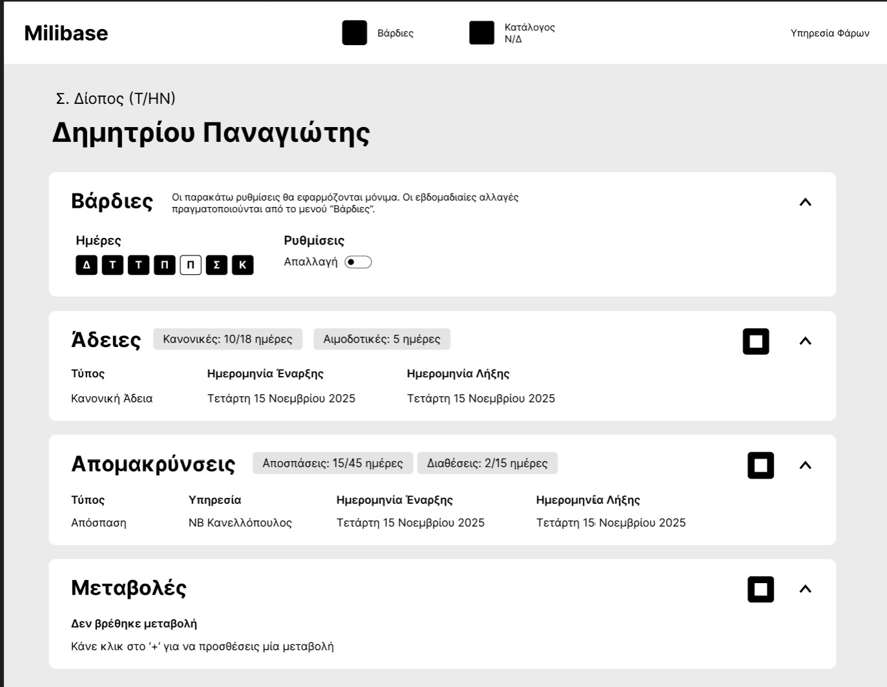
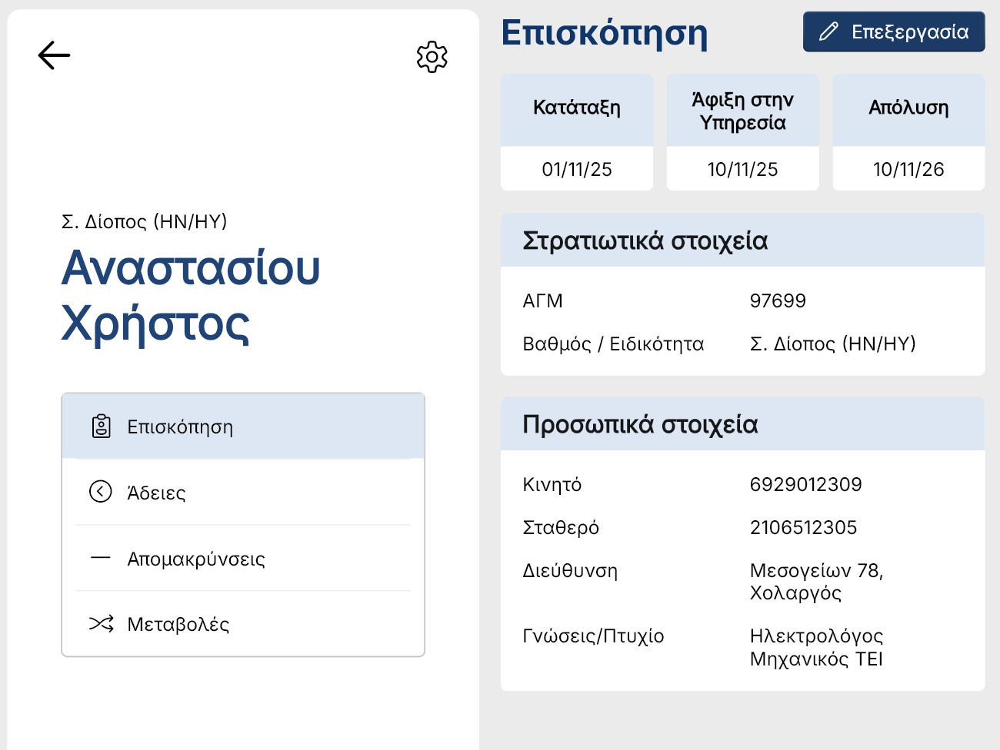
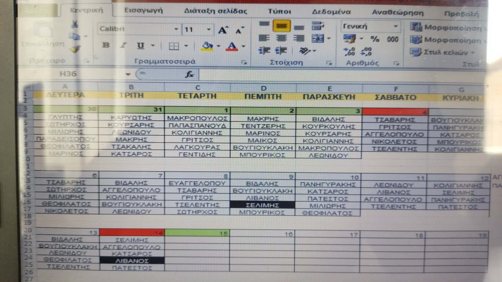
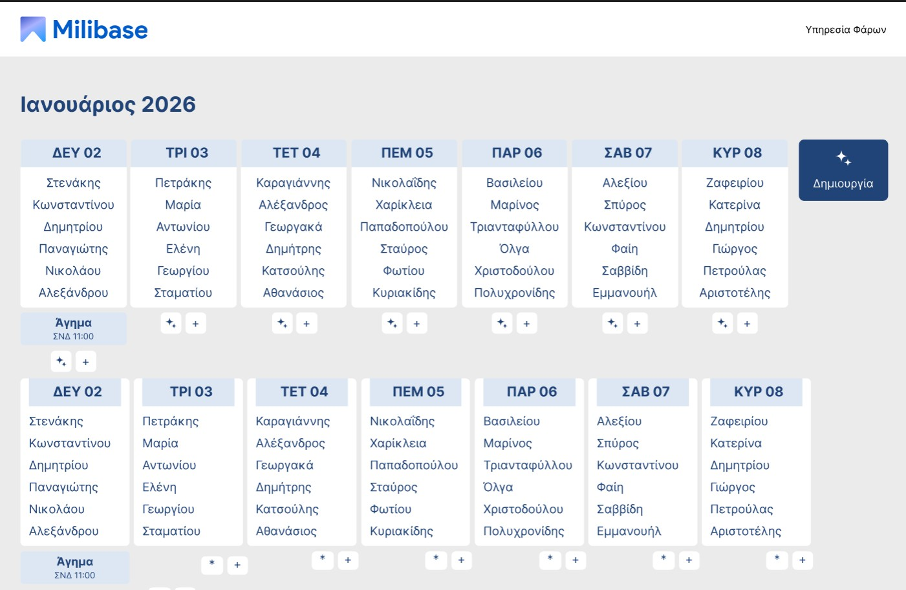

Milibase
A complete database for managing soldiers — records, leaves, and service history, all in one place.

Seamless companion for soldier management

Manage soldier information
Every soldier's profile brings together everything you need in one place — service dates including introduction, arrival, and removal, a unique General Registry Number, specialty, and a full set of personal data. All the basic information to handle service requests accross the board.


Set leaves. Sort by date and type
Milibase's leave management system organizes absences by type — regular, sick, emergency, and more — and automatically calculates the total days used per category. With a built-in date tracking system, every leave entry is counted and logged, giving commanders a clear, accurate picture of each soldier's leave history and remaining balance at a glance.


Monthly calendar view
A built-in monthly calendar view maps out leaves, absences, and key dates across the unit — providing a clear, visual overview of soldier availability without having to search through individual records.

Dedicated single-file offline database
All data is stored in a single local file providing both safety and portability. This ensures Milibase works in low-end machines and allows users to transfer or export data easily, just by copying a single file.

Automatic OTA updates
Milibase updates itself automatically via GitHub. When a new version is available, the app notifies you and applies the update on the spot. Always up to date reliably.
Research
I interviewed 1 unit administrator along with 2 soldiers on the same office to understand their biggest pain points with the current soldier management system.
"Collecting multiple soldiers' data at once takes a lot of time"
When it is the time for soldiers to end their service, all their service history must be written down in official papers. Before Milibase, officials had to gather information from scattered folders which led to frustration.
"I need to find a specific sailor's data at a glance"
For certain procedures, officials needed to find a sailor's information (p.e. phone number) fast without the need to search for their name in a huge folder with every soliders' data inside.
"I need to reliably take down sailors' service alterations"
When it is the time for a soldier to temporarily move to another service location, everything needs to be taken down until they end their service. Note taking on a paper is the easiest solution to forget and lose this information.
Functionality limitations
During the early concept thinking, there were 2 limitations that had to be taken account for when deciding how Milibase would work: The device that the software would be installed was low-end and had no internet access
Low-end machine
The solution was not to overload the system with fancy animations and heavy dependencies when creating the software. Depending on an existing design system ensures everything works smoothly with no unecessary asset loading.
No internet connection
In order to protect sensitive data, only selected devices had access to the internet. To solve that, a local database would create a safe offline way to store data without the need to fetch data from an external server.
Design
Created with Flutter inspired by Microsoft's Fluent UI kit, it ensures the design is expressive across all devices and gives out a native Windows feeling. Since Milibase is a simple database app for limited use there was no need to come up with a new attractive design, all it was needed was Simplicity & Efficiency

Colors
The color palette focuses on the color of the navy: blue. A native feeling is crucial to match all the other assets and general aesthetic of the military. Two shades of blue, main and accent color, they work together to provide the necessary contrast and hierarchy.

Lists
The lists follow a simple - and a bit generic - design, nothing fancy. This is because user experience is a top priority, the user has to be able to find everything at a glance.
Design solutions

Early prototype
Problem
Early concepts grouped all info together in a single page for simpler navigation and an all-in-one view of all soldier's information. The problem with this approach was that, as the amount of information was starting to get bigger and bigger, there was not enough room for everything. Some sections got off-screen and the whole experience created a visual clutter.

Final design
Solution
Creating sub-categories created a more visually controlled environment where user would only see a certain amount of information. This approach solves the problem of information clutter and categorizes elements based on their relationship. The added navigation complexity to navigate each category is a much needed sacrifice but delivers more usability than it costs.
Feature: Vardies
"Vardies" was a feature that got cancelled due to time limitations and implementation complexity. Despite that, some early designs focus a lot on usability and show the experimental side of the project. Originally, soldiers' names on daily guard service (vardies) are written down on a spreadsheet for easy information, which can be very useful when dealing with a large number of soliders. As an integrated feature, Vardies would assist in automatic creation of the schedule, easier sharing to other soldiers along with easy database migration to other devices. Future plans would include AI chatbot inegration for easy adjusting schedule with natural language. (Names on photos are ficitonal for identity safety)
The idea was to create a familiar interface with added functionality such as algorithmic vardies creation, support for external obligations (agimata) and easy integration with the existing solider database.


Wanna try it yourself?
1. Download and install Milibase (Windows OS only)
2. Download backup.json
backup.json